Task 5. Modeling a business process with multiple participants
- 1. Objective of the task
- 2. Prerequisites
- 3. Task execution process
- 3.1. Modeling the business process
- 3.2. Creating a script task "Prepare data for display"
- 3.2.1. Creating a user task "Add laboratory information"
- 3.2.2. Creating a service task "Search for laboratory data (transient var)"
- 3.2.3. Creating and configuring an XOR gateway "Are data present?"
- 3.2.4. Creating a branch with a validation error
- 3.2.5. Creating a branch with continuing the business process
- 3.2.6. Creating a user task for data signing
- 3.2.7. Creating a service task "Get users with the Officer role"
- 3.2.8. Creating a user task "Assign a task executor for document validation"
- 3.2.9. Creating a script task "Prepare document data for display"
- 3.2.10. Creating a user task "Check the uniqueness of the laboratory record"
- 3.2.11. Creating an XOR Gateway "Is the laboratory unique?"
- 3.2.12. Creating a branch with a negative business process outcome
- 3.2.13. Creating a branch with further business process continuation
- 3.2.14. Creating a user task for data signing
- 3.2.15. Creating a scripting task "Prepare data for recording (transient var)"
- 3.2.16. Modeling a service task for data signing with system key
- 3.2.17. Creating a service task "Save data to data factory"
- 3.2.18. Creating an event for handling errors
- 3.2.19. Creating a service task to set business process result
- 3.2.20. Creating an end event for business process completion
- 3.2.21. Saving the modeled business process diagram
- 3.3. Modeling UI forms for the business process
- 3.4. Modeling forms using formVariables
- 3.5. Access modeling for business process
- 4. Transferring regulatory files to remote Gerrit repository
- 5. Appendices
| 🌠This document is available in both English and Ukrainian. Use the language toggle in the top right corner to switch between versions. |
1. Objective of the task
- The objective of the task is to:
-
-
Learn how to model a business process with multiple participants.
-
Learn how to model forms and customize them using formVariables.
-
Within the scope of this task, the modelers are required to:
-
Model 1 business process.
-
Model 5 data entry forms for the business process.
-
Create roles necessary for the functioning of the business process.
-
Provide access to the business process for respective roles.
-
Save the created artifacts to the local git repository.
-
Transfer local changes to the remote Gerrit repository.
2. Prerequisites
Before proceeding with the task, the following prerequisites must be completed:
3. Task execution process
3.1. Modeling the business process
|
During the modeling phase of the business process, it is necessary to create and save the corresponding BPMN diagram. Use the file citizen-add-lab.bpmn with a ready-made business process schema as an example. |
Business process modeling checklist
Use the provided checklist with a list of steps to create the business process:
-
Creating a service task "Search for laboratory data (transient var)"
-
Creating a user task "Assign a task executor for document validation"
-
Creating a user task "Check the uniqueness of the laboratory record"
-
Creating a branch with further business process continuation
-
Creating a scripting task "Prepare data for recording (transient var)"
| Important! After completing all the stages, do not forget to save the modeled business process schema to the respective folder with the registry regulations (see Saving the modeled business process diagram). |
3.1.1. Creating a pool for the business process
First, model a pool for the business process. To do this, follow the steps below:
| The modeling of the business process diagram should take place within the Create Pool/Participant element. |
-
Open the Camunda Modeler application and create a new BPMN diagram. To do this, click on the menu File → New File → BPMN Diagram in the upper left corner:

-
On the left toolbar, find the element Create pool/Participant and drag it to the modeling panel:

-
Fill in the following fields with respective values:
-
In the Name field, enter
Lab creation; -
In the Process id field, specify
citizen-add-lab; -
In the Process name field, enter
Lab creation process.
-
3.1.2. Creating the initial event
Create the initial event. To do this, follow these steps:
-
On the left toolbar, find the CreateStartEvent element (circle) and drag it to the modeling panel:
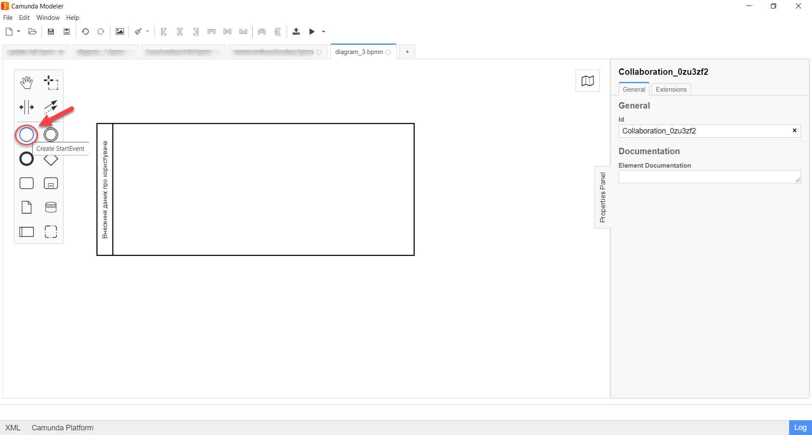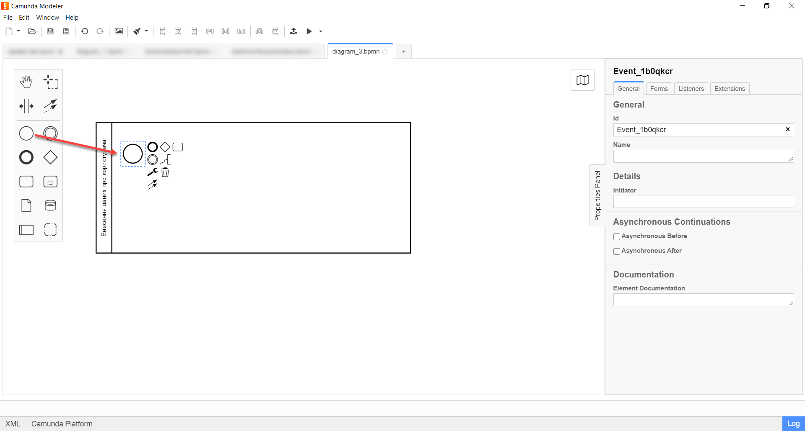 -
On the settings panel on the right, fill in the following parameters with respective values:
-
In the Name field, enter
Start; -
In the Initiator field, enter
initiator.
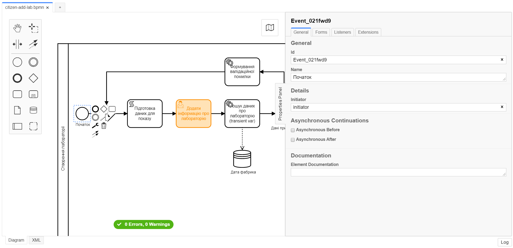
-
3.2. Creating a script task "Prepare data for display"
At this stage, it is necessary to model a script task for preparing data for display. To do this, follow these steps:
-
Select the circle with the start event modeled on the previous stage and attach a new task by clicking the Append Task icon:
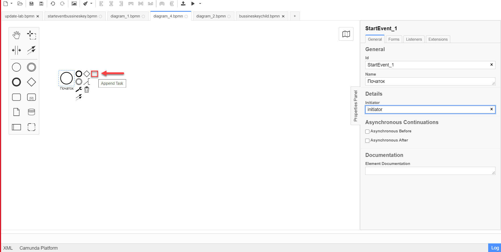
-
Specify the task type by clicking the key icon and selecting Script Task from the menu:
-
Highlight the added script task and configure the following parameters:
-
In the Id field, enter
convertSignFormDataToDataFactoryFormatActivity; -
In the Name field, enter
Prepare data for display; -
In the Script Format field, specify the format (language) of the script as
groovy; -
In the Script type field, select
InlineScript; -
In the Script field, insert the actual groovy script.
Click to expand or collapse
def cephData = [:] cephData['edrpou'] = initiator().edrpou execution.removeVariable('payload') set_transient_variable('payload', S(cephData, 'application/json'))
-
3.2.1. Creating a user task "Add laboratory information"
At this stage, it is necessary to model a user task Add laboratory information for data entry by the user. To do this, follow these steps:
Using the example from Task 3, create a new user task for data entry by the user. To do this, follow these steps:
-
Select the rectangle with the script task modeled on the previous stage and attach a new task.
-
Specify the task type by clicking the key icon and selecting User Task from the menu.
-
On the settings panel on the right, click
Open Catalog, select the User Form template from the catalog, and clickApplyto confirm. -
Fill in the following fields on the settings panel on the right:
-
In the Id field, specify
addLabCitizenActivity; -
In the Name field, enter
Add laboratory information; -
In the Form key field, enter
citizen-add-lab-bp-add-lab; -
In the Assignee field, enter
${initiator}; -
In the Form data pre-population field, enter
${payload}.
-
3.2.2. Creating a service task "Search for laboratory data (transient var)"
At this stage, it is necessary to create a service task Search for laboratory data (transient var) for searching laboratory data. To do this, follow these steps:
Using the example from Task 3 model a service task for searching for laboratory data. To do this, follow these steps:
-
Select the rectangle with the user task
Add laboratory informationmodeled in the previous stage and attach a new task by clicking the Append Task icon. -
Specify the task type by clicking the key icon and selecting Service Task from the menu.
-
On the settings panel on the right, click
Open Catalog, select the Search for entities in data factory template from the catalog, and clickApplyto confirm. -
Fill in the following fields on the settings panel on the right:
-
In the Name field, specify
Search for laboratory data (transient var); -
In the section Input Parameters → Resource, specify the following:
-
In the Variable Assignment Type field, select
String or Expression; -
In the Variable Assignment Value field, specify
laboratory-equal-edrpou-name-count.
-
-
In the section Input Parameters → Search Variables, specify the following:
-
In the Variable Assignment Type field, select Map.
-
In the Add Entry section, add parameters
nameandedrpou(UA-specific) by clicking the plus (+) icon and provide their corresponding values as follows:Key Value name${submission('addLabCitizenActivity').formData.prop('name').value()}edrpou${submission('addLabCitizenActivity').formData.prop('edrpou').value()}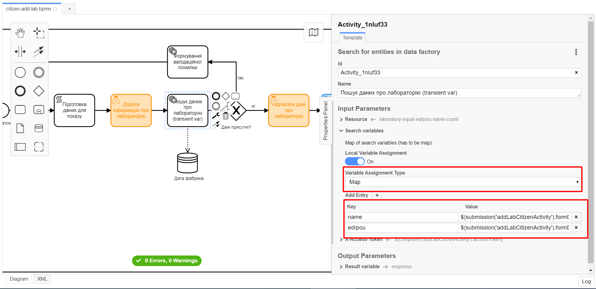
-
-
In the section Input Parameters → X-Access-Token, specify the following:
-
In the Variable Assignment Type field, select
String or Expression; -
In the Variable Assignment Value field, specify
${completer('addLabCitizenActivity').accessToken}.After completing the first user task, try to use the function
completer('<task_id>')to obtain user data instead ofinitiator().The access token can be obtained either from the initiator (e.g.,
$initiator().accessToken}) or the executor of the last user task (e.g.,${completer('taskDefinitionId').accessToken}).The JWT token has a validity period of 300 seconds. If you specify the initiator’s token, who initiated the business process, and the user takes a long time to complete the task, the token’s validity will expire, and the business process will need to be restarted.
For more information about JUEL functions, you can refer to JUEL functions in business processes.
-
-
In the Output Parameters section → Result Variable, fill in the parameter
Assign to Process Variablewith the value response:
-
3.2.3. Creating and configuring an XOR gateway "Are data present?"
Using the example from Task 3 attach an XOR Gateway. Follow the steps below:
-
Select the rectangle with the service task
Search for laboratory data (transient var)modeled on the previous stage and attach an XOR Gateway by clicking the Append Gateway icon. -
On the settings panel on the right, in the Name field, enter the name of the gateway —
Are Data Present?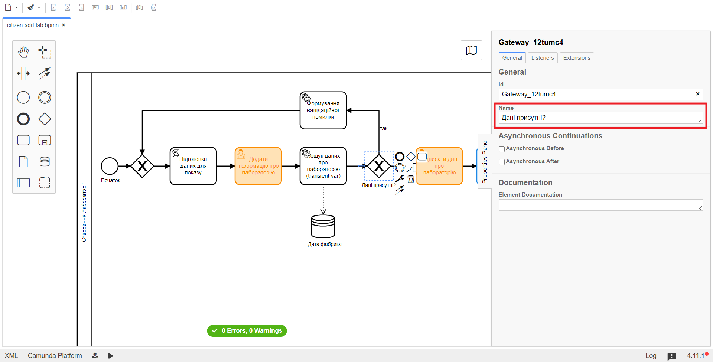
3.2.4. Creating a branch with a validation error
Using the example from Task 3 create a branch with a validation error. Follow the steps below:
-
Select the diamond with the
Are Data Present?XOR Gateway modeled in the previous stage and create a new service task by clicking the "Append Task" icon. -
Specify the task type by clicking the key icon and selecting Service Task from the menu.
-
Click
Open Catalog, select the Throw validation error template, and clickApplyto confirm. -
On the settings panel on the right, fill in the following fields:
-
In the Name field, enter
Generating a validation error; -
In the section Input Parameters → Validation Errors, specify the following:
-
In the Variable Assignment Type field, select
List; -
For the Value field, add the following value:
Значення{"field": "name", "value": "${submission('addLabCitizenActivity').formData.prop('name').stringValue().replaceAll("\"", "\\\\\"")}", "message": "Data for this laboratory already exists"}
-
-
-
On the branch that goes from the
Are data present?gateway to theGenerating a Validation Errorservice task, you need to configure the following:-
In the Name field, enter
yes; -
In the Condition Type field, enter
Expression; -
In the Expression field, enter
${!response.value.responseBody.elements().isEmpty()}.
-
3.2.5. Creating a branch with continuing the business process
Using the example from Task 3 create a branch that continues the business process.
To do this, on the branch that goes from the Are data present? gateway to the Sign laboratory data user task (see Creating a user task for data signing), configure the following:
-
Leave the Id field with the default value.
-
In the Name field, enter
No. -
In the Condition Type field, enter
Expression. -
In the Expression field, enter
${response.value.responseBody.elements().isEmpty()}.
3.2.6. Creating a user task for data signing
Using the example from Task 3,create a user task for data signing. Follow these steps:
-
Specify the task type by clicking the key icon and selecting User Task from the menu.
-
Click
Open Catalog, select the Citizen Sign Task template, and clickApplyto confirm. -
On the settings panel on the right, fill in the following fields:
-
In the Id field, enter
signLabCitizenActivity; -
In the Name field, enter
Sign laboratory data; -
In the Form key field, enter
shared-citizen-sign-lab; -
In the Assignee field, enter
${initiator}; -
In the Form data pre-population field, enter
${submission('addLabCitizenActivity').formData}. -
Leave the INDIVIDUAL field with the value
disabled(default); -
For the ENTREPRENEUR field, choose the value
enabled; -
For the LEGAL field, choose the value
enabled.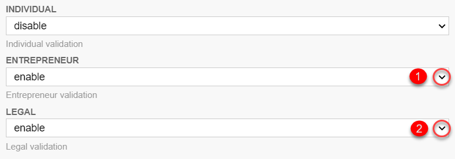
-
3.2.7. Creating a service task "Get users with the Officer role"
Using the example of Creating a service task "Search for laboratory data (transient var)", you need to create a service task to get users with the role "Officer" from the Keycloak identity and access management service. Follow these steps:
-
Select the rectangle with the user task
Sign laboratory datamodeled on the previous stage, and attach a new service task by clicking the Append Task icon. -
Specify the task type by clicking the key icon and selecting Service Task from the menu.
-
Click
Open Catalog, select the Get users by role from Keycloak template, and clickApplyto confirm. -
On the settings panel on the right, fill in the following fields:
-
In the Name field, enter
Get users with role 'officer'; -
In the Result Variable field, enter
officerUsers.

-
3.2.8. Creating a user task "Assign a task executor for document validation"
Using the example of Creating a user task for data signing, create a new user task that allows assigning a executor for another task. Follow these steps:
-
Select the rectangle with the user task
Get users with role 'officer'modeled on the previous stage, and attach a new user task by clicking the Append Task icon. -
Specify the task type by clicking the key icon and selecting User Task from the menu.
-
Click
Open Catalog, select the User Form template, and clickApplyto confirm. -
On the settings panel on the right, fill in the following fields:
-
In the Id field, enter
dispatchTaskActivity; -
In the Name field, enter
Assign a task executor for document validation; -
In the Form key field, enter
shared-dispatch-task; -
In the Assignee field, enter
${initiator}; -
In the Candidate roles field, enter
task-dispatcher— the role for which this task will be available; -
In the Form variables field, enter
officerUsers— the variable that will be passed to the form.
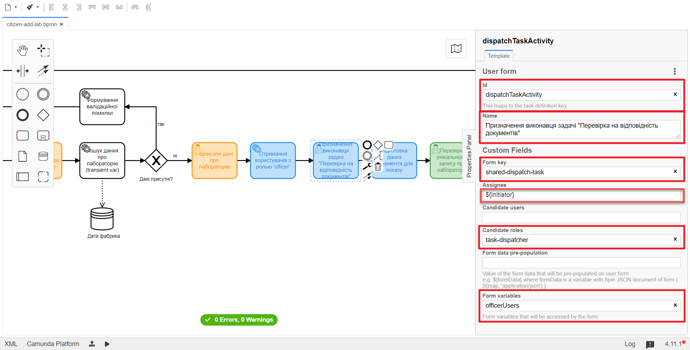
-
3.2.9. Creating a script task "Prepare document data for display"
Using the example of Creating a script task "Prepare data for display", model and attach a new script task. Follow these steps:
-
Select the rectangle with the user task modeled on the previous stage, and attach a new script task by clicking the Append Task icon.
-
Specify the task type by clicking the key icon and selecting Script Task from the menu.
-
On the settings panel on the right, fill in the following fields:
-
In the Name field, enter
Prepare document data for display; -
In the Script Format field, select the type (language) of the script —
groovy; -
In the Script Type field, select the type of the script —
InlineScript; -
In the Script field, insert the actual groovy script.
Click to expand or collapse
execution.removeVariable('officerAssignee') set_variable('officerAssignee', submission('dispatchTaskActivity').formData.prop('userTaskAssignee').prop('userName').value())
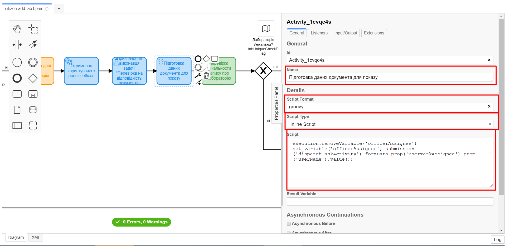
-
3.2.10. Creating a user task "Check the uniqueness of the laboratory record"
Using the example of Creating a user task "Assign a task executor for document validation", create a new user task to check the uniqueness of the laboratory record. Follow these steps:
-
Select the rectangle with the script task modeled in the previous stage, and attach a new user task by clicking the Append Task icon.
-
Specify the task type by clicking the key icon and selecting User Task from the menu.
-
Click
Open Catalog, select the User Form template, and clickApplyto confirm. -
On the settings panel on the right, fill in the following fields:
-
In the Id field, enter
checkLabOfficerActivity; -
In the Name field, enter
Check the uniqueness of the laboratory record; -
In the Form key field, enter
shared-officer-check-lab; -
In the Assignee field, enter
${officerAssignee}; -
In the Form data pre-population field, enter
${submission('signLabCitizenActivity').formData}.
-
3.2.11. Creating an XOR Gateway "Is the laboratory unique?"
Using the example of Creating and configuring an XOR gateway "Are data present?", model and connect a new XOR gateway. Follow the steps below:
-
Select the rectangle with the user task modeled on the previous stage, and connect an XOR gateway by clicking the Append Gateway icon.
-
On the right-hand settings panel, in the Name field, specify the gateway name as "Is the laboratory unique?"
labUniqueCheckFlag.
3.2.12. Creating a branch with a negative business process outcome
Using the example of Creating a branch with a validation error, create a new branch with a negative business process outcome. Follow the steps below:
-
Select the diamond with the XOR gateway "Is the laboratory unique?" modeled on the previous stage, and create a new service task by clicking the Append Task icon.
-
Determine the task type by clicking the key icon and selecting Service Task from the menu.
-
Click
Open Catalog, select the Define business process status template, and clickApplyto confirm. -
On the right-hand settings panel, fill in the following fields:
-
In the Name field, enter the value
"Execution result "Laboratory not created — Duplicate"; -
In the Status field, enter
"Laboratory not created — Such a laboratory already exists".
+
-
-
Highlight the branch leading to the service task Execution result
"Laboratory not created — Duplicate"and configure the following parameters:-
In the Name field, enter
No; -
In the Condition Type field, select
Expression; -
In the Expression field, enter the expression
${!submission('checkLabOfficerActivity').formData.hasProp('labUniqueCheckFlag') || submission('checkLabOfficerActivity').formData.prop('labUniqueCheckFlag').value() == false}.
-
3.2.13. Creating a branch with further business process continuation
Using the example of Creating a branch with continuing the business process, create a new branch for continuing the process.
To do this, on the branch leading from the XOR gateway Is the laboratory unique? (see Creating an XOR Gateway "Is the laboratory unique?"), to the user task Sign laboratory data (see Creating a user task for data signing) configure the following parameters:
-
Leave the Id field with the default value.
-
In the Name field, enter
Yes. -
In the Condition Type field, select
Expression. -
In the Expression field, enter the expression
${submission('checkLabOfficerActivity').formData.hasProp('labUniqueCheckFlag') && submission('checkLabOfficerActivity').formData.prop('labUniqueCheckFlag').value() == true}.

3.2.14. Creating a user task for data signing
It is necessary to create a user task for data signing. Follow these steps:
-
Specify the task type by clicking the key icon and selecting User Task from the menu.
-
On the right-hand settings panel, click Open Catalog, select the User Form template, and click
Applyto confirm. -
Fill in the following fields with the appropriate values:
-
In the Id field, enter
signLabOfficerActivity; -
In the Name field, enter
Sign laboratory data; -
In the Form key field, enter
shared-officer-sign-lab; -
In the Assignee field, enter
${officerAssignee}; -
In the Form data pre-population field, enter
${submission('checkLabOfficerActivity').formData}.
-
3.2.15. Creating a scripting task "Prepare data for recording (transient var)"
Create a new scripting task to prepare data for recording. To do this, proceed with the following settings:
-
Select the rectangle with the user task modeled on the previous stage, and attach a new task by clicking the Append Task icon.
-
Specify the task type by clicking the key icon and selecting Script Task from the menu.
-
Highlight the added scripting task and configure the following parameters:
-
In the Name field, enter
Prepare data for recording (transient var); -
In the Script Format field, specify the scripting language as
groovy; -
In the Script Type field, select the
InlineScriptscript type; -
In the Script field, insert the groovy script directly:
Click to expand or collapse
def signedFormData = submission('signLabOfficerActivity').formData signedFormData.prop('oblast', signedFormData.prop('oblast').prop('code')) signedFormData.prop('koatuuId', signedFormData.prop('koatuu').prop('koatuuId')) signedFormData.deleteProp('koatuu') signedFormData.prop('ownershipId', signedFormData.prop('ownership').prop('ownershipId')) signedFormData.deleteProp('ownership') if(signedFormData.hasProp('premisesFile') && !signedFormData.prop('premisesFile').isNull() && !signedFormData.prop('premisesFile').elements().isEmpty()) { signedFormData.prop('premisesFile', signedFormData.prop('premisesFile').elements()[0]) } else { signedFormData.prop('premisesFile', null as String) } if(signedFormData.hasProp('accreditationFile') && !signedFormData.prop('accreditationFile').isNull() && !signedFormData.prop('accreditationFile').elements().isEmpty()) { signedFormData.prop('accreditationFile', signedFormData.prop('accreditationFile').elements()[0]) } else { signedFormData.prop('accreditationFile', null as String) } execution.removeVariable('dataPayload') set_transient_variable('dataPayload', signedFormData)
-
3.2.16. Modeling a service task for data signing with system key
Create a service task for data signing using a system key and configure the appropriate integration extension. Follow the steps below:
-
Select the rectangle with the scripting task created in the previous stage, and attach a new task by clicking the Append Task icon.
-
Specify the task type by clicking the key icon and selecting Service Task from the menu.
-
On the right-hand settings panel, click Open Catalog to open the list of available delegate templates.
-
From the list received, select the System signature by DSO service template, which is required for data signing with a system key.
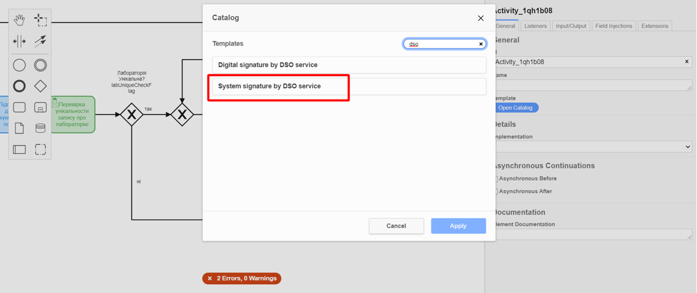
-
On the right-hand settings panel, open the General tab and configure the delegate parameters as follows:
-
In the Name field, enter the task name as
Sign data with system key; -
In the Payload field, provide the data to be digitally signed –
${dataPayload}; -
In the X-Access-Token source field, provide the access token of the person currently executing the task with ID ‘signLabOfficerActivity’ —
${completer('signLabOfficerActivity').accessToken}.After the execution of the first user task, try to use the function
completer('<*task_id*>')to obtain user data, instead ofinitiator().Access token is taken from either the initiator (e.g.,
$initiator().accessToken} or the executor of the last user task (e.g., `${completer('taskDefinitionId').accessToken}).JWT token has a validity period of 300 seconds. If you specify the token of the initiator who started the business process, and the user takes a long time to complete the task, the token’s validity will expire, and the business process will need to be restarted.
For more details on JUEL functions, you can refer to JUEL functions in business processes.
-
In the
Result variablefield, specify the variable name to store the digital signature of the provided data —system_signature_ceph_key.
-
-
3.2.17. Creating a service task "Save data to data factory"
At this step, you need to create and configure a new service task to save data to the Data Factory. Follow the steps provided below:
-
Select the rectangle with the Call Activity task created on the previous stage and create a new service task
Save data to data factoryby clicking the key icon and selecting Service Task from the menu. -
Click
Open Catalog, select the Create entity in data factory template, and clickApplyto confirm. -
On the right-hand settings panel, configure the following parameters:
-
In the Name field, enter
Save data to data factory; -
In the Resource field, specify
laboratory; -
In the Payload field, enter
${dataPayload}; -
In the X-Access-Token field, enter
${completer('signLabOfficerActivity').accessToken}.After the execution of the first user task, try to use the function
completer('<task_id>')to obtain user data, instead ofinitiator().Access token is taken from either the initiator (e.g.,
$initiator().accessToken}) or the executor of the last user task (e.g.,${completer('taskDefinitionId').accessToken}).JWT token has a validity period of 300 seconds. If you specify the token of the initiator who started the business process, and the user takes a long time to complete the task, the token’s validity will expire, and the business process will need to be restarted.
For more details on JUEL functions, you can refer to JUEL functions in business processes.
-
In the X-Digital-Signature source field, enter
${sign_submission('signLabOfficerActivity').signatureDocumentId}; -
In the X-Digital-Signature-Derived source field, enter
${system_signature_ceph_key}; -
In the Result Variable field, enter
response.
-
3.2.18. Creating an event for handling errors
At this stage, you need to model and configure an intermediate boundary event for handling scenarios with anticipated errors. Follow the steps below:
-
Drag an Intermediate/Boundary event from the toolbar and attach it to the Save data to data factory Service Task.
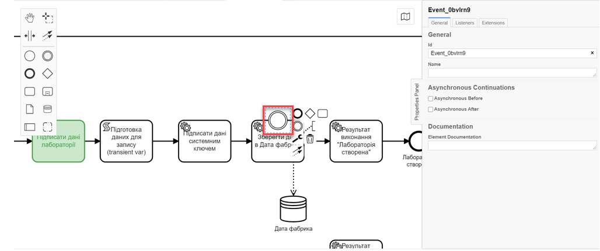
-
Define the event type as an Error Boundary Event (Intermediate boundary event "Error")
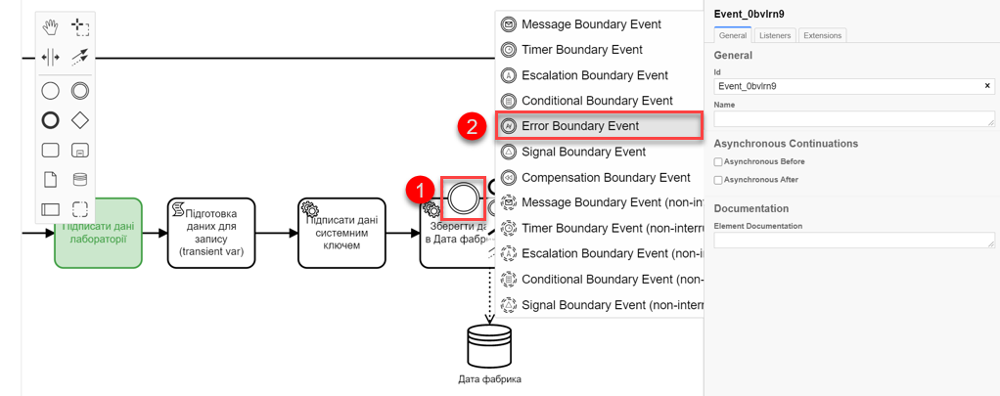
-
Create a Gateway that will act as a checkpoint for redirection in case of an error.
-
Add error handling logic by connecting the Error Boundary Event and the Gateway.
This means that if an error occurs during the Save data to data factory stage, we will automatically return to the checkpoint, from where the process execution will restart.
| Modeling components related to "Data factory" and all dashed lines are purely informational. The instructions do not include an example of their creation, but you can add them according to your preferences. |
3.2.19. Creating a service task to set business process result
Using Task 3 as an example, model a new service task that will set the result of the business process. Follow the steps below:
-
Select the rectangle with the service task created on the previous stage, and attach a new task by clicking the Append Task icon.
-
Specify the task type by clicking the key icon and selecting Service Task from the menu.
-
Click
Open Catalog, select the Define business process status template, and clickApplyto confirm. -
On the right-hand settings panel, configure the following parameters:
-
In the Name field, enter
Process result: Laboratory created; -
In the Status field, enter
Laboratory created.
-
3.2.20. Creating an end event for business process completion
At this stage, create an event that will mark the completion of the business process.
-
Using Task 3 as an example, attach and configure the end event for the business process.
-
On the right-hand settings panel, set the
Nameparameter toLaboratory created.
| As a result, we have modeled a business process for use by multiple participants, including the invocation of an external subprocess (Call Activity). |
3.2.21. Saving the modeled business process diagram
After completing the modeling process, save the resulting business process diagram with the name citizen-add-lab.bpmn to the bpmn project’s regulatory folder in the Gerrit repository. To do this, in the top-left corner, open the File menu > Save File As…, enter the appropriate name and path.
3.3. Modeling UI forms for the business process
|
During the form modeling phase, create and link JSON forms to the previously modeled tasks within the business process. Forms are linked to business processes by their service name. Use the files shared-officer-sign-lab.json, shared-officer-check-lab.json, shared-dispatch-task.json, shared-citizen-sign-lab.json, citizen-add-lab-bp-add-lab.json with the modeled forms as an example. |
Checklist of the UI forms modeling
- Use the provided checklist with a list of steps to create forms:
| After completing all stages, upload and save the form schema files to the corresponding folder with the registry regulations (see Loading modeled business process forms to local directory). |
3.3.1. Creating a form for data entry
| Model a form for data entry by the user, using the example from Task 3. |
-
Log in to the Regulations administrator portal.

By default, the user lands on the home page of the Version overview of regulations master data.

For more details about the version of regulations master data, you can refer to the following link:
The master version of changes to the registry regulations allows working with UI forms only in preview mode.
To create or edit any entities of the regulations (forms, business processes, etc.) and their components, you need to create a new candidate version for changes to the regulations master data and work within it.
-
Create a new change request for the regulations master data, which means creating a new candidate version for changes.
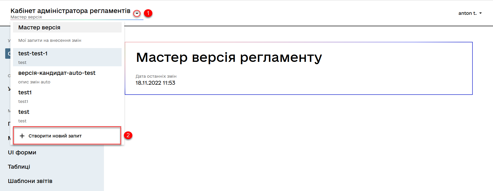
OR
Select an existing candidate version for changes.
For more details about creating and viewing change requests for the regulations master data, you can refer to the following links:
-
Within your candidate version, navigate to the UI forms section.
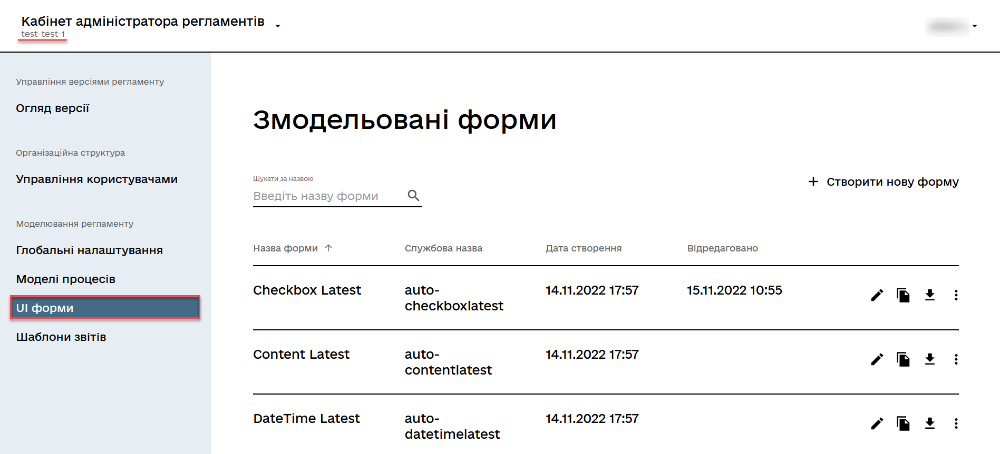
-
Copy the add-lab-bp-add-lab form modeled in Task 3 by clicking the copy icon — this will allow you to create a form from an existing template.

-
In the new window, on the General tab, enter the business name of the form as
Enter laboratory data. The name corresponds to the business name of the modeled user taskaddLabCitizenActivity. -
Fill in the Form’s service name field with the value
citizen-add-lab-bp-add-lab(corresponds to the Form Key field value of the same user taskaddLabCitizenActivity). -
Navigate to the Constructor tab.
-
For the "Region", "Settlement Name", and "Ownership Form" components, on the Data tab, in the Data Source Type URL field, remove
/officer.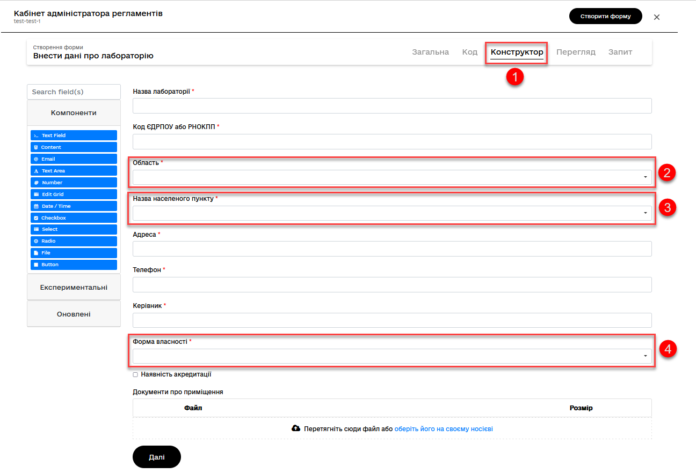
-
Ensure that the final data source configurations for the components are as follows:
-
The "Region" component —
/api/data-factory/koatuu-obl-contains-name; -
The "Settlement Name" component —
/api/data-factory/koatuu-np-starts-with-name-by-obl; -
компонент "Форма власності" —
/api/data-factory/ownership-contains-name. -
The "Ownership Form" component —
/api/data-factory/ownership-contains-name.
-
-
-
Save the form by clicking the
Save changesbutton in the top-right corner.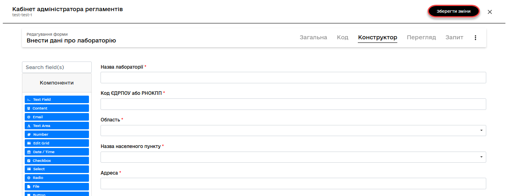
3.3.2. Citizen’s signature form modeling
After completing the previous stage of creating a data input form, create another form specifically for data signature.
| Model a form for user input using the example from ref:study-project/study-tasks/task-3-bp-modeling-with-integration.adoc#form-data-signing[Task 3]. |
-
Copy the UI form for laboratory data input by clicking on the copy icon — this will allow you to create a form from a ready-made template.
-
Enter the form editing mode and switch to the General tab.
-
In the Form business name field, enter the name of the corresponding user task: signLabCitizenActivity.
-
Fill in the Form Key field with the value
shared-citizen-sign-lab(corresponds to the Form key field value of the same user task).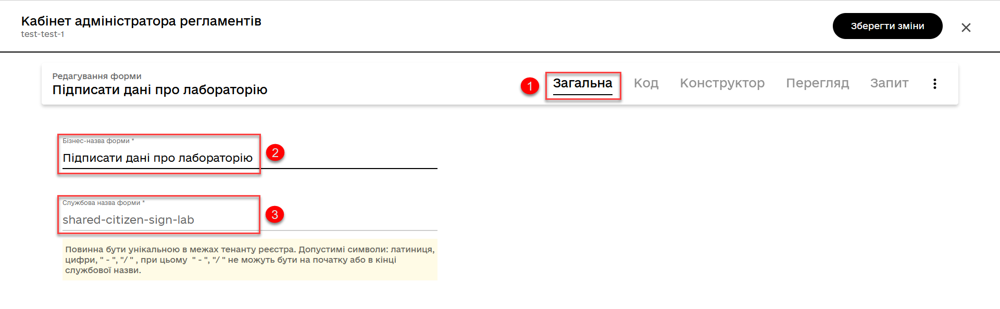
-
Switch to the Builder tab and perform the following settings for each component:
-
On the Display tab, check the Disabled parameter.
-
Click the Save button to save the changes.
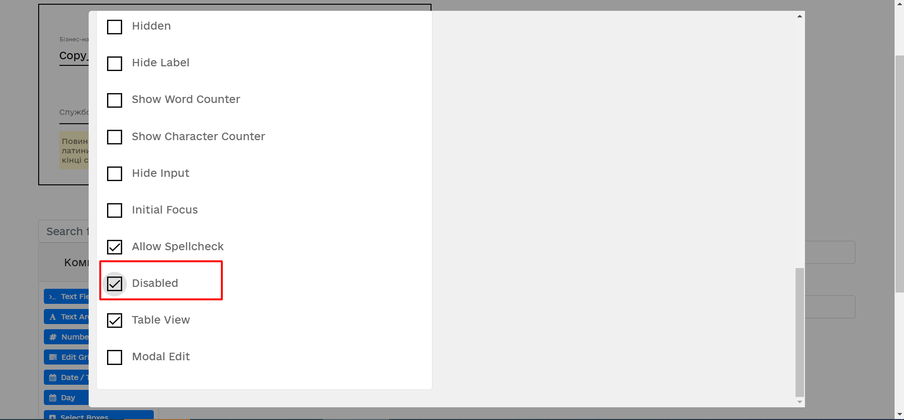
-
-
Switch to the Preview tab. Here you can see how the form will appear in the user interface. All fields are inactive.
-
Save the form by clicking the Save changes button in the upper right corner.
3.4. Modeling forms using formVariables
3.4.1. Task executor assignment form modeling
| Continue modeling forms within the same candidate version for changes that was created in the ref:#form-insert-data[previous section]. |
-
Within your candidate version, navigate to the UI Forms section.
-
To create a new form for the business process, click the Create new form button:
-
In the new window, enter a Business form name that corresponds to the name of the modeled user task — Assign task executor (dispatchTaskActivity).
-
Fill in the Form’s service name field with the value
shared-dispatch-task(matching the Form key field value of the user taskAssign task executor(dispatchTaskActivity).
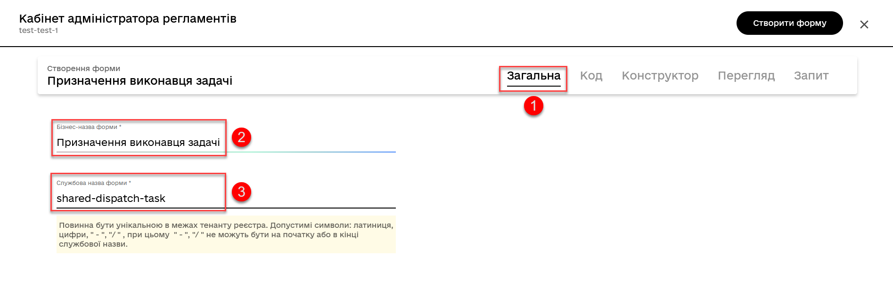
+
-
-
Switch to the Builder tab and model the form using components.
-
Drag and drop the Select component from the component panel on the left to the modeling panel and proceed with further configuration of the component:

-
Switch to the Display tab and fill in the Label field with the value
Choose executor’s full name: -
Switch to the API tab and fill in the
Property Namefield withuserTaskAssignee:
-
Switch to the Data tab and configure the following parameters:
-
In the Data source type field, enter
Custom; -
In the Id Path field, enter
userName; -
In the Custom Values field, enter
values = formVariables.officerUsers; -
In the Item Template field, enter
<span>{{ item.fullName }}</span>.
-
-
Click the Save button to save the changes.

-
-
Save the form by clicking the Create form button in the upper right corner:
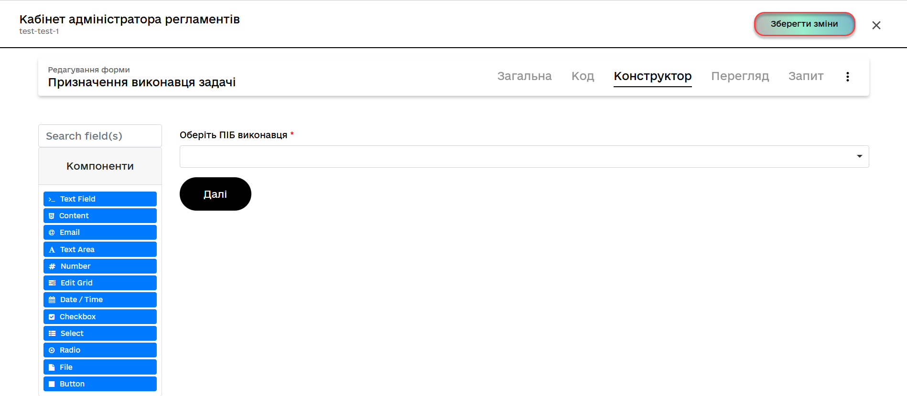
3.4.2. Data validation form modeling by officer
Model a form for data validation by an officer. To do this, follow these steps:
-
Copy the Assign task executor form modeled above by clicking the copy icon — this will allow you to create a form from a ready-made template:
-
In the new window, open the General tab.
-
In the Business form name field, enter the name
Unique laboratory record check, corresponding to the name of the user taskcheckLabOfficerActivity. -
Fill in the Form’s service name field with the value
shared-officer-check-lab(matching the Form key field value of the user task checkLabOfficerActivity).
-
-
Switch to the Builder tab and model the form using components.
-
Drag and drop the Checkbox component from the component panel on the left to the modeling panel and proceed with further configuration:
-
Switch to the Display tab and fill in the Label field with the value
Laboratory is not duplicated: -
Switch to the API tab and fill in the Property Name field with
labUniqueCheckFlag. -
Click the Save button to save the changes:
-
-
Save the form by clicking the Create form button in the upper right corner:
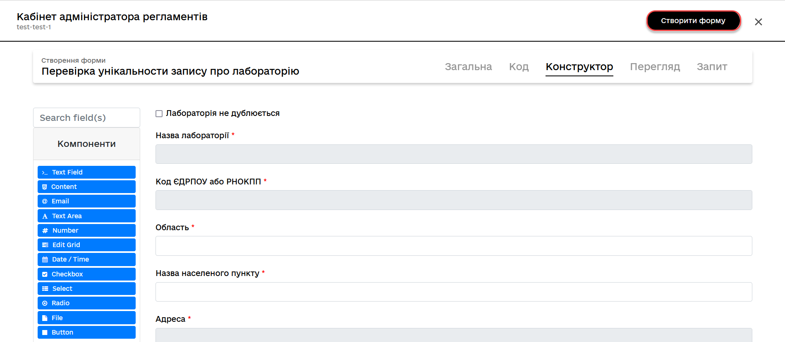
3.4.3. Modeling a form for data signing by an officer
Model a form to enable data signing by an officer. Follow these steps:
-
Copy the form for data verification by an officer modeled earlier by clicking the copy icon — this will allow you to create a form from an existing template:
-
In the new window, switch to the General tab.
-
In the Business form name field, enter a name corresponding to the task
signLabOfficerActivity. -
Fill in the Service form name field with the value
shared-officer-sign-lab(should correspond to the Form Key field value of the same user task —signLabOfficerActivity.
+
-
-
Switch to the Constructor tab and perform the following settings for all components of the form:
-
Switch to the Display tab and set the
Disabledparameter toTrue. -
Click the Save button to save the changes.
-
-
Save the form by clicking the Create form button in the top-right corner.
3.4.4. Loading modeled business process forms to local directory
To load the forms, click on the ⤓ (download icon), and place them in the project’s regulatory forms folder within the local Gerrit repository.
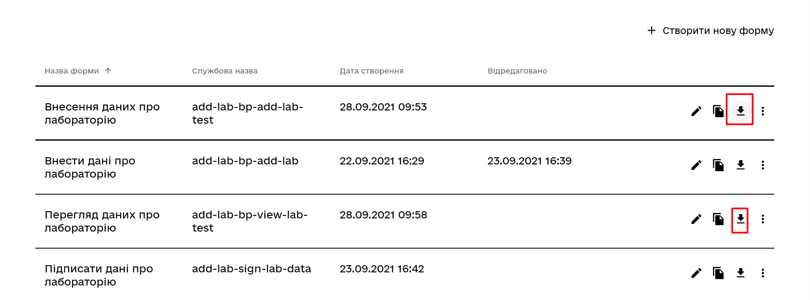
3.5. Access modeling for business process
|
At this stage, it is necessary to provide access to the business process from the Citizen portal. Access parameters are configured in the configuration file named citizen.yml.citizen.yml. |
-
Create the citizen.yml file and configure the following parameters within it:
Example: Configuring access to the business process from the Citizen portalauthorization: realm: 'citizen' process_definitions: - process_definition_id: 'citizen-add-lab' process_name: 'Laboratory creation process' process_description: 'Business process of creating a laboratory by a Citizen' roles: - 'unregistered-individual' - 'unregistered-entrepreneur' - 'unregistered-legal' -
Save a file to the bp-auth project folder.
3.5.1. Creating a new role for task allocation in the Officer portal
-
Navigate to the regulatory roles folder, find the officer.yml, and add 2 new parameters to it:
Example: Adding parameters to create a role for task allocation- name: task-dispatcher description: Task dispatcher role -
Save a file to the bp-auth project folder.
3.5.2. Saving access configuration files
Save the officer.yml file to the bp-auth folder of the project in the local Gerrit repository.
4. Transferring regulatory files to remote Gerrit repository
For successful deployment of the business process, forms, and applying the correct access settings to the business process in the target environment, the regulations administrator must upload the saved local regulation files to the remote Gerrit code repository.
To do this, follow the steps in Deploying registry regulations in Gerrit.
| Once the local changes are incorporated into the regulation process in Gerrit and after confirming that everything is functioning correctly, delete the created candidate version for changes in the Regulations administrator portal. |
5. Appendices
This section contains examples of ready-made artifacts of regulations modeling that you can use during the execution of this task.